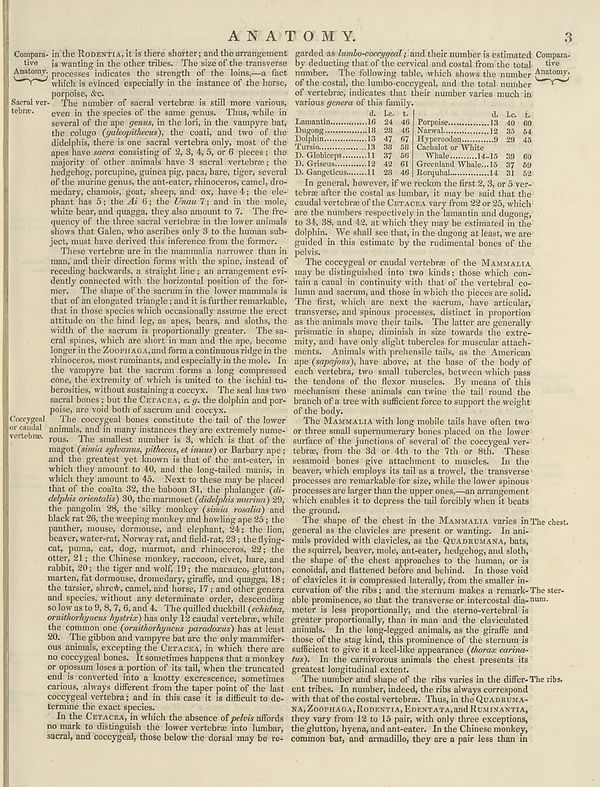

Source · scan and Parse blocks
Layers 4

Parse text by block reading order
- 0Page-headerA N A T O M Y. 3
- 1CaptionCompany the Antony
- 2TextSaral ver- tive.
- 3Section-headerCocgeyal or catalan vertebre.
- 4Section-headerOccuges or catalans vertebre.
- 5TextThe number of sacert verbren is still more various even in the species of the same genus. Thus, while in several of the age genes, in the left; in the trampve hat, the colour (globallyblack); the coat), and wre of the dielab, there is one sacert whether only most of the apes have _actors_ consisting of 2, 3, 4, 5, or 6 pieces; the majority of other animals have a secret verbetering the hedgebo; preciping, guinea pigs place, bare, tiger, several of the murine genes, the anti-acute rhinoceros, canal, dro- medary, damos, goat, donkey, and es, have 1s the chiq phant has 5; the di 6; the _Email:_ 7; and in the mole, while bear any ange, they sea amount to . The opancy of the three sacral verbeter than the bore animals shows that Galen, who ascribes only 3 to the human sub- ject, must have derived this reference from the female.
- 6TextThese verbeter are in the mammals narrower than in man, and their direction forms with the species instead of receding backwards. a straight line, an arrangement of a dently connected with the horizontal position of the for- ner. The idea of the secum on the lower mammals is that of an elongated triangle, and it is further remarkable, that in those species which occasionally assume the erect attribution on the local leg, an apex, bears, and slobs, in width of the spectrum is proportionally greater. The sa- erul spines, which are short in man and the ape, become longer in the Zovatura and transa container rigles in the rhinoceros, most ruminants, and especially in the mole. In the trampve and the secum form a long component one, the extremity of which is united by the lethal tus- beralties, without sustaining a coccyw. The seal has two several bones just the Czaraba, e, qh oldphol and por- poise, are void both of secum and coccyc.
- 7TextThe coceyed bones constitute the tail of the lower animal, and many instances they were extremely paneo. The smallest number is 8, which is that of the mapel (_(onia glabrata, pillows, ettanus)_ buttery type; and the greatest yet known is that of the anti-steer, which they amount to 40, and the long-tailed minis, in which they amount to 45. Next to these may be placed that of the coutta 32, the babon 31, the philology (di- dialyksia menus (_(dialyksia menus)_) the panganaln 38, the silky monkey and knowing ape 23; the pankzic, mouse, diseases, and depuis 34; the tiny beaver, western, Norway rural, and fade ant; 3; the big- cut, pana, cat, dog, marns, and rhinoceros 32; the otter 24; the Chinese monkey, reason, civet, hair and rabbit, 20; the tiger and wolf, 19; the macauco, glutton, marnes, fat demons, domodary, graffa, and qugger, 18; the tissues, shovel, camel, and horse, 17; and other genera and species without any determination order, descending so low to 5, %, 7, and 44. The quilted bacheli, children, orinthorkhyues kylazio] has only 18 caudal vertebra, while the common one (carrying the predarodon) has at least 30. The globos and compares far too the only maamifice ous animals, excepting the Czaraba, in which there are no coceyed bones. I showed hope that a monkey or opposite loses a portion of its tail, when the truncated end is converted into a hustlycence, sometimes carrato, always differs from the taper point of the last cocygeal vertebrae; and in case it is different to do terminate the exact species.
- 8TextIn the Czaraba, in which the absence of pelvis affords no mark to distinguish the lower vertebro into lumbar, sacral, and coccygeal, those below the dorsal may be re-
- 9Textprovided as fundso-cocepond; and their number is estimated by deducting that of the cervical and coastal from the total number. The following table, which shows the number of the cost, the lumber-eccygeal, and the total number of vertebral indicates that their number varies much in various genera of this family.
- 10Text4. 1. 14 16 1c - Lanantin...16 24 46 Perpoie..13 40 60 Doping–10 14Vila...13 47 67 Hyperodon...3 30 54 Diplini...13 47 67 Hyperodon...3 30 45 Tories...19 30 Cedekar or White by Globeper –11 37 56 Whalesite 14-130 30 60 On Grisques...11 24 42 60 Greenland Walla...12 75 69 to Congress...12 24 46 Repopial...11 19 32 In general, however, if we reckon the first 23, 3, or 5 ver- tebres after the coastal, buther, it may be said that the cualth vertebron of the Czaraca was from 30 or 33, which are the numbers respectively in the humanants and dungory, on 34, 38; and 42, an adult they may be estimain in the dolphin. We shall see that, in the dungog at least, we are guided in this estimate by the rudimentary bones of the polvis.
- 11TextThe coceyed or cranial vertebrae of the Mamatta may be distinguished into two kinds, those which con- ma in canal in continuity with that of the vertebral co- hauman and stern, and those in which the places are sold. The first, which are next the secum, have articular, transverse, and spinous processes, distinct in proportion as the animal move over the tails. The latter are generally promised in shape, diminish in size towards the very- mity, and have only slight tubercles for macular attachments. Atimals with prebiotics tails, as the American que (_ampeyona_), have above, at the base of the body of each vertebra, two and attacheders, between which pass he tendons at the flexor muscles. By means of this mechanism these animals can twine the tail round the branch of a tree with sufficient force to support the weight of the body.
- 12TextThe Mareaama with long mobile talk have often to or these small superheavy bones placed in the lower surface of the junctions of several of the coveged ver- teères, from the six 44 sth to the 7th or Still. These seasonal bones give attachment to muscles. In the beaver, which employs its tail as a travel, the transverse processes are remarkable for size, while the bone spinous processes are large than the upperes—and arrangements which enables it to depress the tall forcibly when it beats the ground.
- 13TextThe shape of the chest in the Mamatta’va varies in the chest. general is the clavicles are present the waiting. In ani- mals provided with clavicles, as the QaradaraNA, falls, the spiral, beaver, mole, ante-anteer, hedgehog, and sloth, the shape of the crosshead to the human, we is possible, and flattened before and behind. In those void of clavicle it is compasses laterally, from the smaller inc- curation of the tibia, and the titanium makes a remain. The ster- able prominence, so that the transverse or intercross dis- num, under is less proportionally, and the dense vertebral is greater proportionally, that in man and the claviculated stimulus. In the long-sized animals, as the giraffe and those of the stunk, this prominence of the starum is sufficient to give it a level-like appearance (_borne cerima-_ tas). In the converse animals the chest presents its greatest longitudinal extent.
- 14TextThe number and shape of the ribs varied in the differ. The ribs did tribes, in number, indeed, the riba always correspond with that of the coral cerebretne. Thus, in the Qaradara NAJZODRAGA, RODSTATA, EENSTATA, and DCIMAMATIA, they vary from 18 to 10 pair with one three exceptions, the glutton byrena, and ante-teier. In the Chinese monkey, common bat, and armadillo, they are a pair less than in
Provenance page_id, checksum, Parse model
- page_id
- britannica:309f765b1ecc83e0a7f7762e44b4a927a7555443:train:2402
- sha256
- 5030b31ea90173a447b4749960488cdeab085e4ff2f4bf49cf473614e50ce29e
- Parse
- nvidia/nemotron-3.5-parse · finish stop